Work with Transcripts
The Transcripts feature within lets you add and delete transcripts as well as edit transcript properties. In addition, you can run Issue Digest Reports and Full Transcript Reports (see Run Transcript Reports).
Add a Transcript
Adding a transcript requires that you upload it from a list of transcript files that you keep locally or on your server.
-
Click the Review & Transcripts module and select a case. Click  . The Visual Search dashboard is displayed.
. The Visual Search dashboard is displayed.
-
Click the Transcripts icon  on the left panel.
on the left panel.
-
Click the plus icon to the right of the All Transcripts label. The transcript file upload dialog box appears.
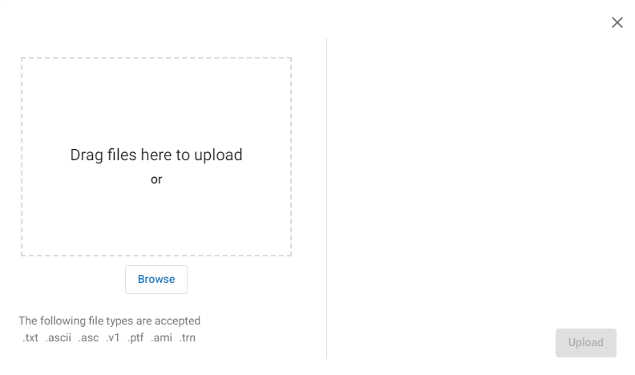
-
Note the file types that are accepted; they are all text-format file types. You can either drag and drop transcript files from a particular location, or display a transcript file folder by clicking the Browse button. In the file folder click a file name for a single selection, or for multiple selections, hold down the SHIFT or CTRL key while selecting files. Click Open.
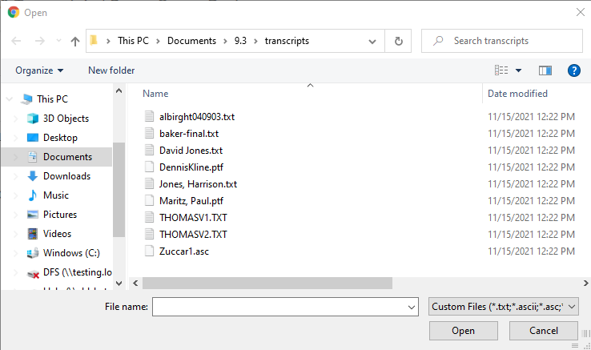
The accepted text file types are: .
txt .ascii .asc .v1 .ptf .ami .trn.
-
Note that selected files display to the right in the upload dialog box. Click Upload.
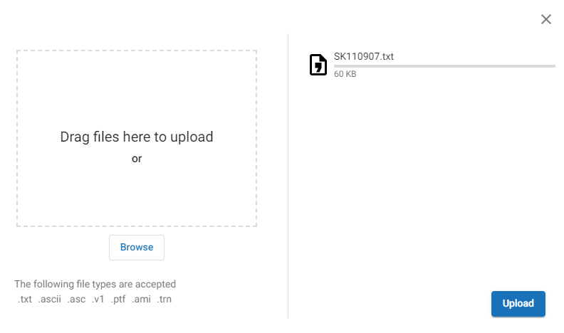
-
The selected files that are actual transcript files are processed and listed as transcript files in the All Transcripts left pane. Click Close when finished.
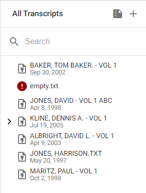
|

|
Note: If a file is not a true transcript file, it will not process and will display in the left pane with a to the left of the file name. The following error dialog box appears:
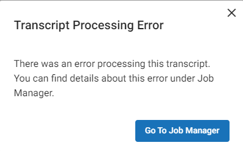
|
|
|
Note: During the import process, the transcript is temporarily added to the Transcripts\FileUploads folder but is then deleted from that location once it has been added to the review case. If you would like to maintain a copy of the transcript in the case you must save it to a permanent case folder.
|
Menu Options
Transcript options are accessed from the Menu which is located at the top right of the window.
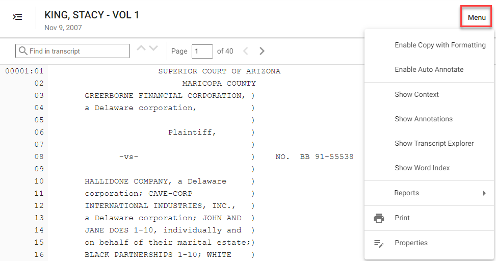
The following options are available:
Enable Copy with Formatting
This option is turned on by default. Unchecking this option will copy the transcript line text without page/line number information.
This option is also available from the right click options after text is selected.
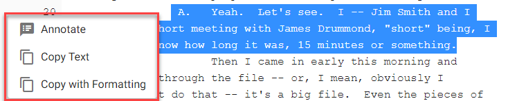
Enable Auto Annotate
To automatically tag portions of the text with particular issues, check Auto Annotate and select the desired text segment. The Issues dialog box appears. The selected range appears at the top. Select the appropriate issues and then click OK.
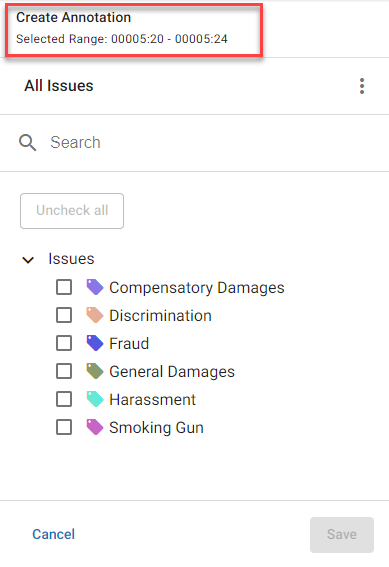
|
|
Note : If you choose to turn off Auto Annotate, when you select the text segment, you must manually right-click within the selected segment and click Annotate for the Issues dialog box to appear.
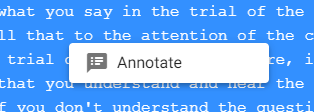
|
Issues
The issue tags come from those originally created in the Tag Palette. For more information on enabling tags for Transcripts, see Create New Tag Groups and Tags.
To manage issues while annotating, click
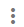
and Manage Issues.
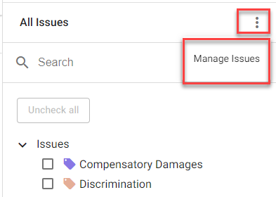
This opens up all available tag groups within your review case. Select additional tag groups and click Save.
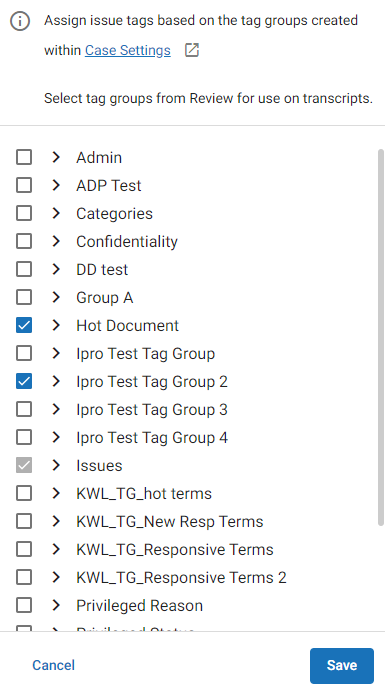
|
|
Note: To assign Issue tags based on the tag groups within Case Settings, click the Edit button. 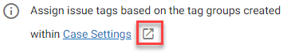
|
Show Context
This feature allows the currently displayed transcript to be shown with the front matter (title, pre-examination information, and so on) in italics and the examination itself with the questions emboldened. This allows the reader to focus more easily on the examination questions at hand.
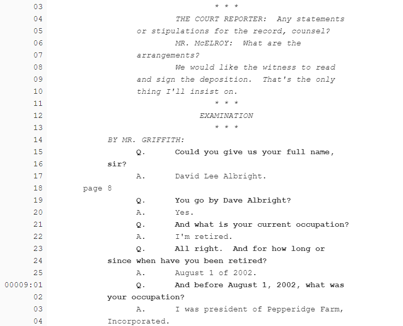
Show Annotations
Checking this option displays all annotations that have been applied.

The areas contain colored vertical-lined annotations within the margins corresponding to the issues selected, plus the region filled in accordingly.
When you hover your mouse over each vertical line, the color of the corresponding issue fills the region.
|
|
Note: The Show Annotations must be checked before annotations can be applied. This option is automatically selected when Auto-Annotate is enabled.
|
Show Word Index
To see the number of instances in which terms within the transcript appear, check Word Index. It appears on the left of your window. Select and drag the symbol to adjust the size for viewing.
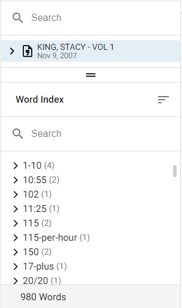
-
A list of the terms with the number of instances displays to the right of each term.
-
Click each term to get a drop-down list of the page:line references where the term instances are located.
-
Hovering on the reference displays a preview
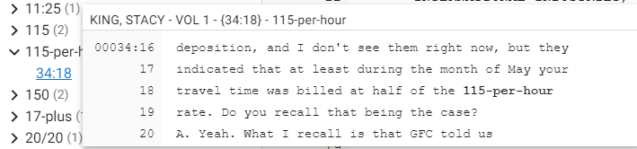
-
Clicking a reference takes you to that instance of the term, highlighting the instance in the transcript.
-
The total number of unique terms is displayed at the bottom of the list.
-
Click the Sort icon to sort the list.
|

|
Note: The Word Index can assist in determining the type of transcript it is. For example, by using the sort function, the user can easily see which words are most prevalent; this can help ascertain that the transcript is about medical malpractice, injury, or a criminal case, for example.
|
Show Transcript Explorer
The Transcript Explorer can be visible or hidden by checking or unchecking this option.
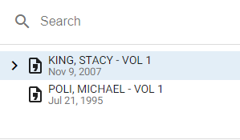
To quickly hide the Transcript Explorer while reviewing, you can click next to the transcript title.
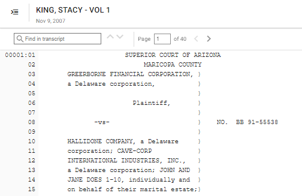
Reports
Select Reports to access the available reports. See Run Transcript Reports for more information.
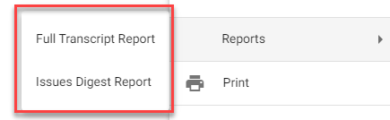
Print
Selecting this option opens up the Full Transcript Report window. See Run Transcript Reports for more information.
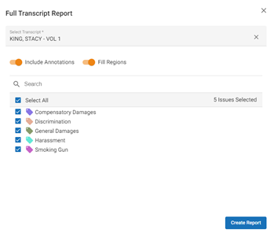
Properties
Click Properties to display the Transcript Properties dialog box.
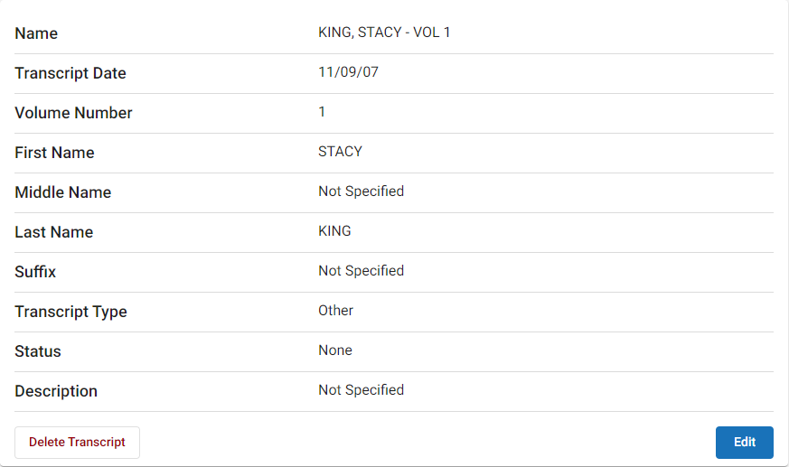
Click to display the editing window. When you have completed editing the fields, click Save.
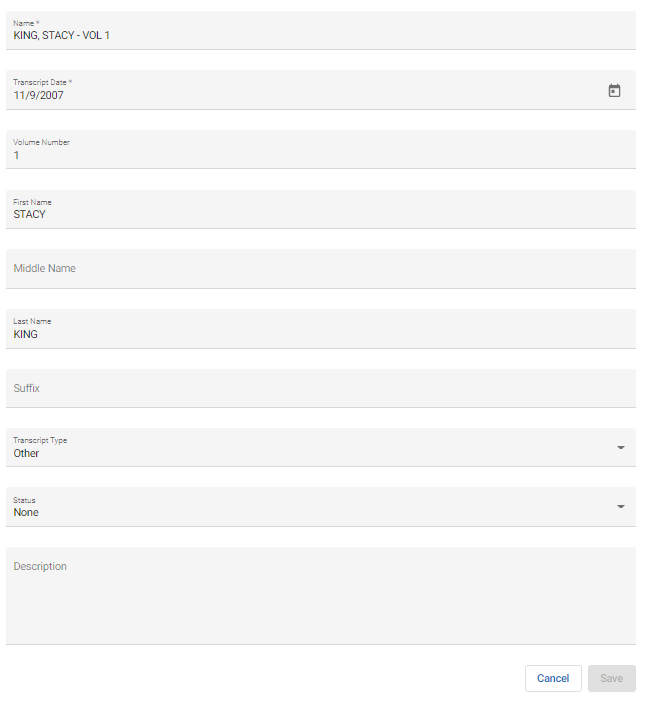
The following table describes the transcript properties:
| Transcript Date |
The date of the transcript |
| Volume Number |
The volume number, as there my be multiple depositions |
| First Name |
First name of the one giving testimony |
| Middle Name |
Middle name of the one giving testimony |
| Last Name |
Last name of the one giving testimony |
| Suffix |
Jr, Sr, III, etc. |
| Transcript Type |
One of the following:
Deposition, Hearing, Trial, Court Proceeding, Other, Surveillance |
| Status |
One of the following:
Draft, Final or None |
| Description |
Transcription description (optional) |
|
Delete Transcript
|
Deletes the selected transcript.
|
Navigate the Transcript
-
To manually scroll through the transcript page by page, click the left and right arrows.
-
To navigate to a particular page, type the page number in the Page box and click ENTER. Note that if you type a non-existing page other than 0, you will be taken to the end of the transcript. If you type 0, you will be taken back to page 1.
Search the Transcript
-
To perform a quick search, use the Find in transcript field. The results are then highlighted in the transcript. Click the up and down arrows to move to each of the highlighted results.
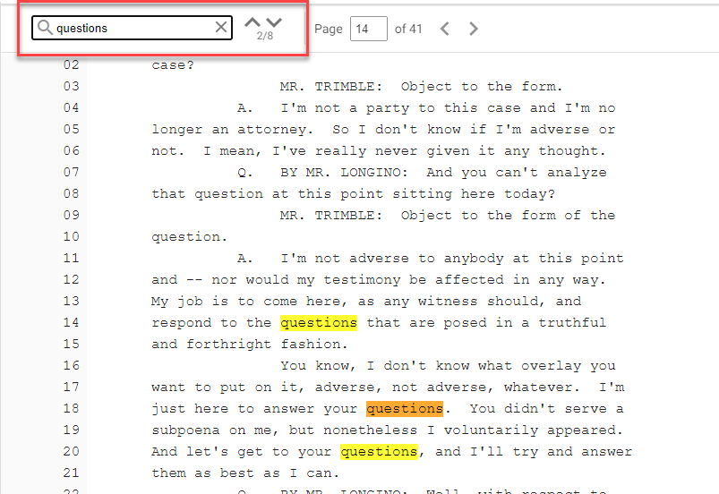
-
Click a listed transcript file to see it displayed in the file viewer to the right.
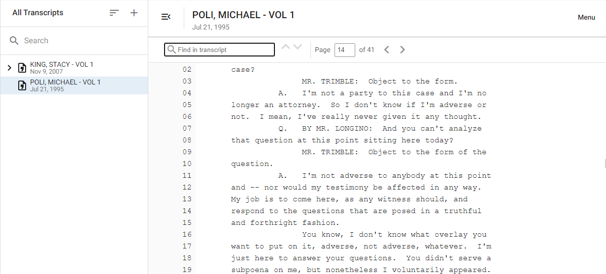
Delete a Transcript
-
In the All Transcripts pane to the left, right-click the name of the transcript and click Delete.
A dialog box displays and asks whether you are sure you want to do this as the action is irreversible.
-
Click Yes.
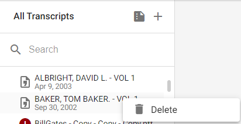
|
|
Note: Selecting multiple transcripts for deletion as a single action is not permitted. The delete action is also available in Edit Properties.
|
Related Topics
Overview: Transcripts
Run Transcript Reports
Create Tag Palettes